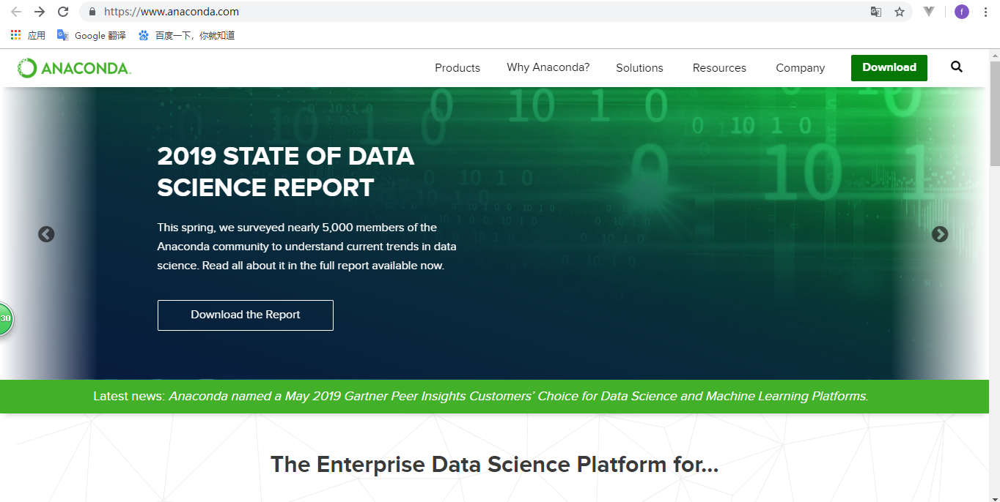
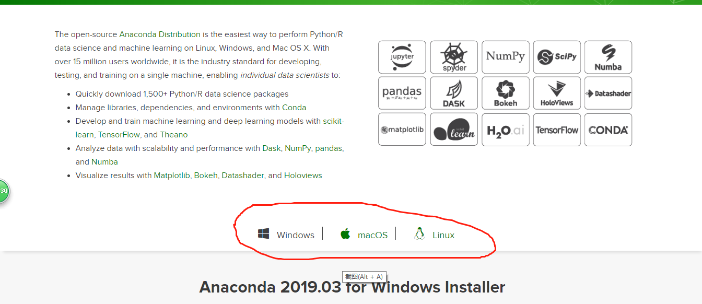

<!DOCTYPE html>
<html lang="en">
<head><meta name="generator" content="Hexo 3.9.0">
  <meta charset="utf-8">
  
  
  
  <meta name="viewport" content="width=device-width, initial-scale=1, maximum-scale=1">
  <title>
    Anaconda安装教程与简单使用 |
    
    铁血军</title>
  
    <link rel="shortcut icon" href="/favicon.ico">
  
  <link rel="stylesheet" href="/css/style.css">
  <link rel="stylesheet" href="/css/technology.css">
  
    <link rel="stylesheet" href="/fancybox/jquery.fancybox.min.css">
  
  <script src="/js/pace.min.js"></script>
</head>
</html>
<body>
  <div id="container">
    <div id="wrap">
      <section class="outer">
  <article id="post-Anaconda安装教程与简单使用" class="article article-type-post" itemscope itemprop="blogPost" data-scroll-reveal>

  <div class="article-inner">
    
      <header class="article-header">
        
  
    <h1 class="article-title" itemprop="name">
      Anaconda安装教程与简单使用
    </h1>
  

      </header>
    

    
      <div class="article-meta">
        <a href="/2019/07/15/Anaconda安装教程与简单使用/" class="article-date">
  <time datetime="2019-07-15T07:43:50.000Z" itemprop="datePublished">2019-07-15</time>
</a>
        
      </div>
    

    <div class="article-entry" itemprop="articleBody">
      

      

      
        <h1 id="Anoconda下载"><a href="#Anoconda下载" class="headerlink" title="Anoconda下载"></a>Anoconda下载</h1><h2 id="下载途径"><a href="#下载途径" class="headerlink" title="下载途径"></a>下载途径</h2><p>在很久很久以前我们用Anoconda一般都是在清华镜像上直接下的，毕竟国内的网站，速度比较快，而且服务也很全，直到2019年4月16清华大学发出了这样一则通知。<br><a href="https://mirror.tuna.tsinghua.edu.cn/news/close-anaconda-service/" target="_blank" rel="noopener">https://mirror.tuna.tsinghua.edu.cn/news/close-anaconda-service/</a><br>由于没有取得授权，无限期的取消了镜像服务。所以现在还是乖乖的去官网上下吧</p>
<h2 id="官网下载"><a href="#官网下载" class="headerlink" title="官网下载"></a>官网下载</h2><p>官网下载链接如下：<br><br><a href="https://www.anaconda.com/" target="_blank" rel="noopener">https://www.anaconda.com/</a><br>当然你也可以直接在百度里输入anoconda官网，一般会出现在第一个。进入官网后看到如下的界面：<br><br><br><br>点击右上角的Download,<br>然后选择自己对应的系统.<br><br><br><br>做技术的还是要往前看的，所以这里我们选新版本3.7.（其实3.7版本直接使用会出现很多的问题，比如对tenserflow和numpy的某些支持可能跟3.6以下的存在很多兼容性的问题，所以我们最好在下载好3.7的anoconda后在本机上再创建一个3.6的环境，具体方法我会再以后的博客中进行更新和讲解）</p>
<h2 id="Anoconda安装"><a href="#Anoconda安装" class="headerlink" title="Anoconda安装"></a>Anoconda安装</h2><p>将下载好的安装包放在本地计算机上，双击启动。<br><br>一路下一步下去。注意最好不要把Anoconda放在C盘，因为未来用的多的话会引入很多的包，存储开销是很大的，所以最好放在其他盘，方便以后与其他编辑器的交互使用，比如pycharm.<br><br>网上有很多人说要进行anoconda的环境配置，本人觉得没有必要，一般都是用Anoconda进行包和环境的管理，所以直接在Anocada prompt中进行安装、移除、升级操作即可。最好用conda更新，不要用pip!不要用pip慢是慢点，踩过的坑只有自己知道呀。。。。</p>

      
    </div>
    <footer class="article-footer">
      <a data-url="http://yoursite.com/2019/07/15/Anaconda安装教程与简单使用/" data-id="cjy9zq0br0000kot8cx3sk86u"
         class="article-share-link">分享</a>
      
    </footer>

  </div>

  
    
  <nav class="article-nav">
    
      <a href="/2019/07/16/pycharm2019绘图窗口无法弹出解决办法/" class="article-nav-link">
        <strong class="article-nav-caption">上一篇</strong>
        <div class="article-nav-title">
          
            pycharm2019绘图窗口无法弹出解决办法
          
        </div>
      </a>
    
    
      <a href="/2019/07/15/嗨，这世界/" class="article-nav-link">
        <strong class="article-nav-caption">下一篇</strong>
        <div class="article-nav-title">My New Post</div>
      </a>
    
  </nav>


  

  
    
  

</article>


</section>
    </div>
    <script src="/js/jquery-2.0.3.min.js"></script>
<script src="/js/lazyload.min.js"></script>
<script src="/js/busuanzi-2.3.pure.min.js"></script>


  <script src="/fancybox/jquery.fancybox.min.js"></script>


<script src="/js/technology.js"></script>

  </div>
</body>
</html>